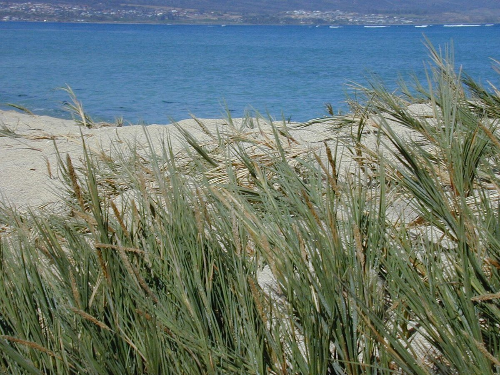
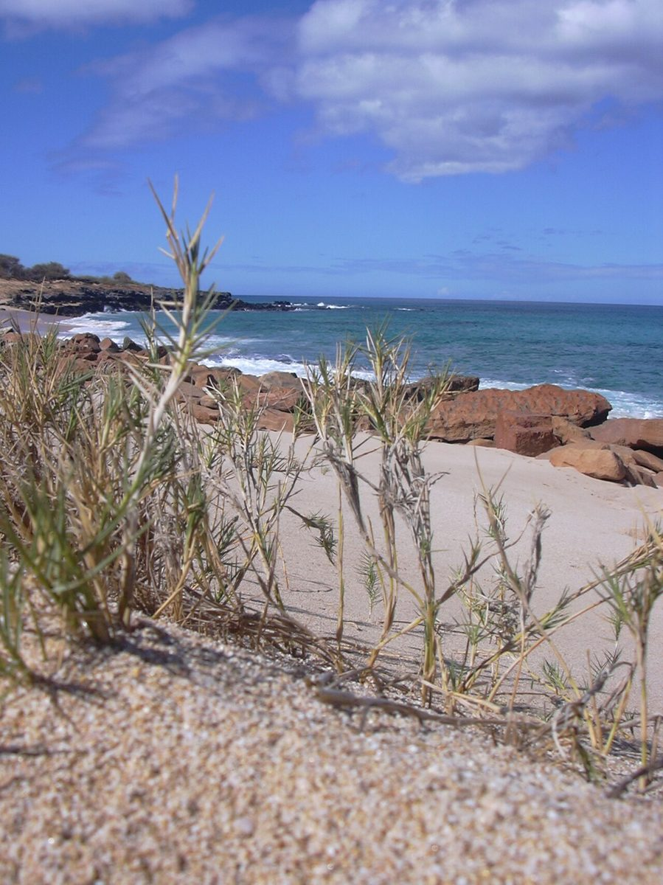

COMMON Beach strand Dune
Sporobolus virginicus
ʻakiʻaki · seashore rush grass, coastal dropseed


Quick facts
| Family | Poaceae |
|---|---|
| Scientific name | Sporobolus virginicus |
| Hawaiian name(s) | ʻakiʻaki |
| English name(s) | seashore rush grass, coastal dropseed |
| Status | Indigenous (native, non-endemic) |
| Conservation | — |
| Coastal zones | Beach strand Dune |
| Occurrence | Dense low-mat grass on beach flats and dune faces along all major Nā Pali beaches; particularly conspicuous where surface sand is stable. |
How to identify
- Growth form
- Wiry, mat-forming, stoloniferous perennial grass, 10–40 cm tall, spreading by underground rhizomes and above-ground runners to form continuous turf.
- Size
- A mat, generally under knee height.
- Leaves
- Stiff, narrow (2–4 mm wide), rolled inward, sharply pointed, ranked in two rows along the wiry stems; often silvery-blue when dry.
- Flowers
- Narrow, spike-like panicle 3–8 cm long, straw-colored to purplish, at the tip of each culm; individual florets tiny.
- Fruit / seed
- Small grain that drops readily from the ripe panicle (whence "dropseed").
- Bark / stem
- Stems wiry, hard, greenish-grey.
- Where it sits on the coast
- Bare sand of the upper strand, dune faces, and salt-splash zones on low rocky headlands. Often intermixed with pōhuehue runners.
Clinchers (features that lock the ID)
- Low mat-forming grass with wiry, sharply pointed leaves in two neat ranks.
- Runs by tough surface stolons across bare sand.
- Narrow spike-like panicle (not a bushy plume like fountain grass).
Look-alikes
- Cenchrus ciliaris (buffelgrass, invasive) — Coarser, tussock-forming, with dense bristly spikelet clusters; not a low creeping mat.
- Cynodon dactylon (Bermuda grass) — Also mat-forming, but its inflorescence is a hand-shaped cluster of 3–7 finger-like spikes at the culm tip, not a single narrow spike.
Ecology
Salt- and drought-tolerant halophyte; a foundational sand binder that stabilizes dune surfaces and reduces wind erosion after storms. Provides cover for shorebirds and native insect fauna. [1], [2], [12]
Cultural significance
ʻAkiʻaki is a familiar element of Hawaiian beach songs and place-names; it is respected as part of the shoreline pili (companion) grasses.